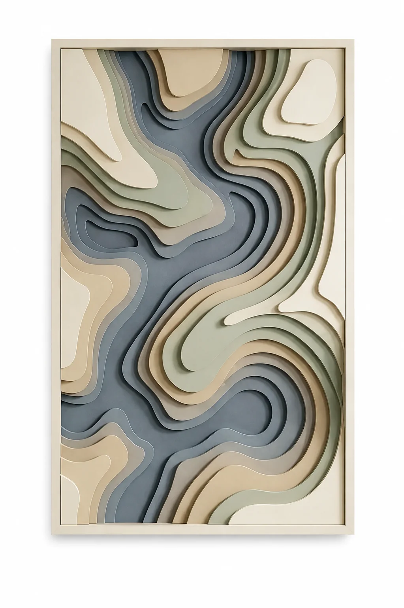
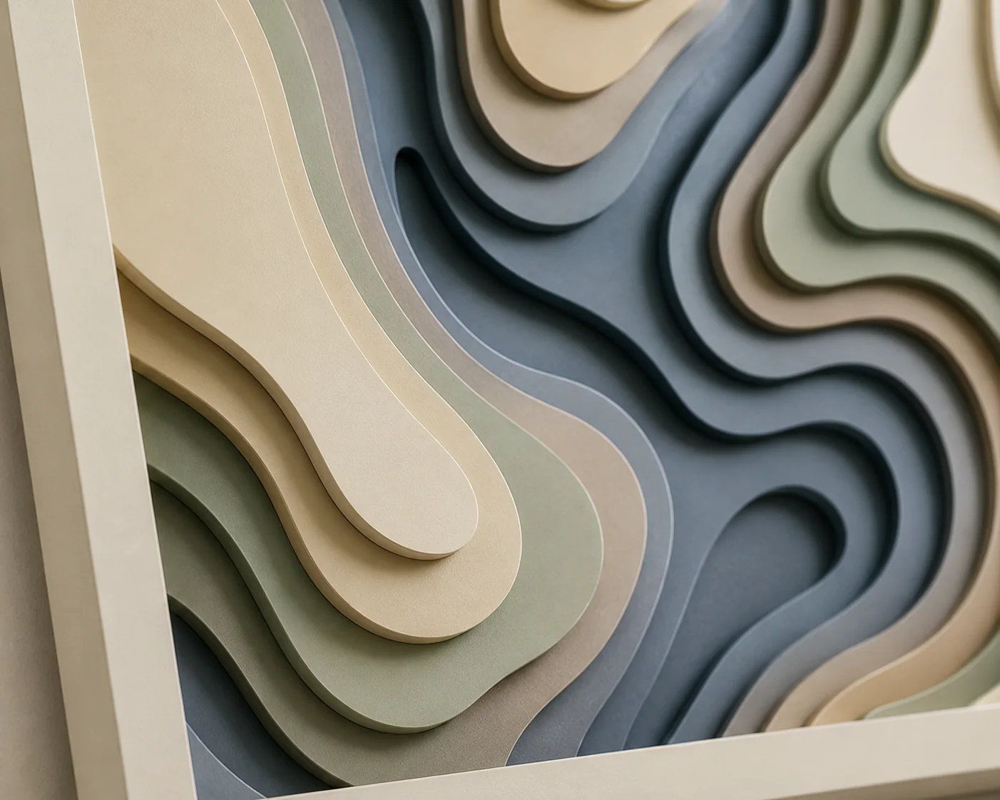

HUEVOKE / SCULPTED OBJECTS
Objects for
quiet spaces.
Relief, material and shadow — composed as objects that belong to architecture.
Enter the collection ↓


FORM / 02
Erosion
Edges recede. Mass gives way.


FORM / 03
Fluid
Fluid
Motion
Forms that appear to continue beyond their edge.




FORM / 05
Tidal
Explore Tidal Landscape →
Tidal
Landscape
From room scale to the edge of a contour.
02 / COLLECTION
ELEMENTS
Familiar forms, reduced to their essence.

Lotus Bloom
View object →
LAYER / RELIEF / SYMBOLExplore Elements →
HUEVOKE / ENQUIRIES